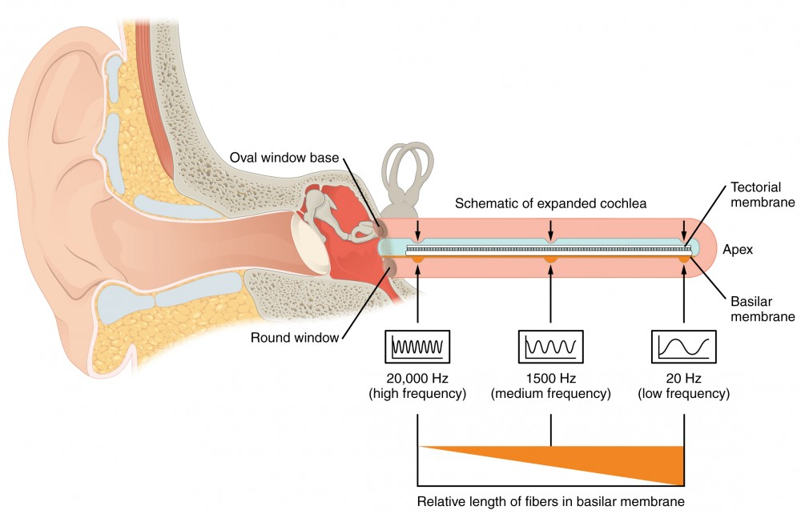
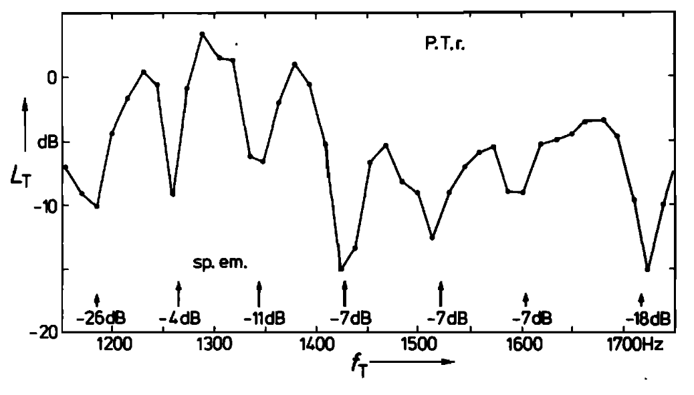
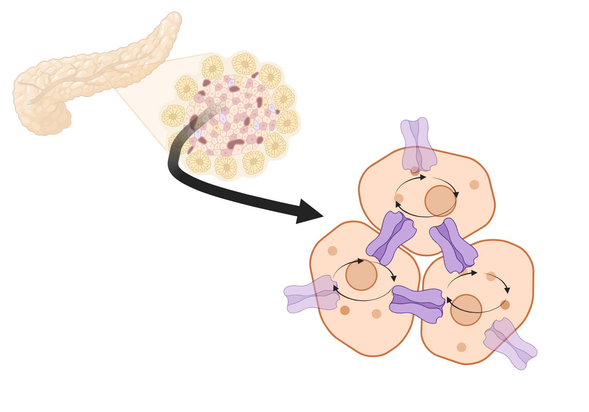
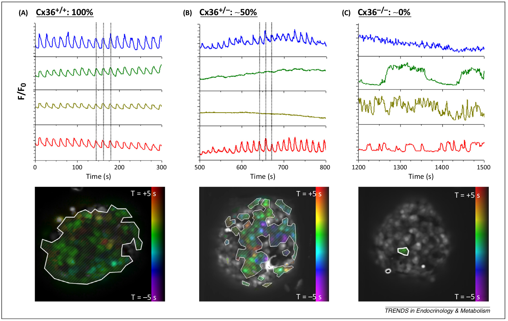
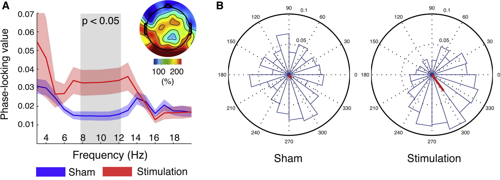
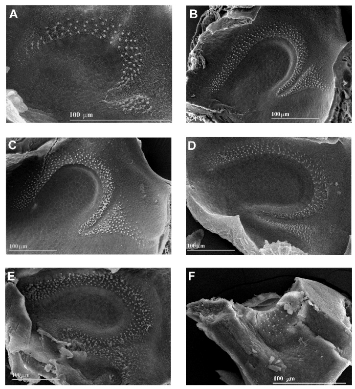

"Ever tried. Ever failed. No matter. Try again. Fail again. Fail better." Samuel Backett (1983)
Understanding hearing as a dynamic system
linking cochlear mechanics, neural encoding and perception
towards predictive diagnostics
Assoc. Prof. Dr. rer. nat. Bastian Epp
Understanding hearing as a dynamic system


We can not fully restore impaired hearing. What are we missing?
Understanding hearing as a dynamic system
Den klassiske måde at modellere hørelsen på


En lidt mere fysiologisk motiveret måde at gøre det på


Spontan, periodisk aktivitet er "naturligt" og plausibelt i et fysiologisk system.
Kan vi bruge "entrainment" til at forklare
spontant aktivitet,
selektivitet, og
høj sensitivitet
som er karakteristisk for hørelsen?
Noget kendt: Audiogram
"Hvad er den mindste intensitet lytteren kan høre?"



lumenlearning.com; Zwicker & Schloth (1984)
Sensitivitet er meget "lokalt"
Noget også kendt: Otoakustiske emissioner
"Der kommer lyd ud af øret!"

Kondziella et al. (2018);
Når vi afspiller toner, opstår der oscillationer i det indre øre.
Noget lidt mindre kendt: Spontane otoakustiske emissioner
"Der kommer lyd ud af øret - også uden stimuli!"


Bergevin & Salerno (2015); Uppenkamp (personal communication); Levy et al. (2016); Zwicker & Schloth (1984)
Der svinger noget i det indre øre - helt af sig selv!
Noget set før (og ikke)
Noget som svinger: En "normal" oscillator

Noget som svinger af sig selv: En "selvkørende" oscillator

Lige nu tænker vi i "normale" oscillatorer - misser vi noget ved ikke at se på "selvkørende" oscillatorer?
Hvad siger litteraturen?
Bugspytkirtlen - blodsukkeregulering
Synchronisering i "pancreatic islets"

Synchronized (wildtype) and non-synchronized (knock-out) cell activity

Benninger & Piston (2014, Trend Endocrin Metabol)
Synkroniserung/entrainment sker kun for "selvkørende" oscillatorer - og det sker i bugspytkirtlen!
Hjernen - processering
Manipulation af hjerneoscillationer med tACS


Bright Brain Centre (online); Helfrich et al. (2014); BioRender
Hjernens "selvkørende" oscillatorer kan påvirkes (synkroniseres) udefra - og har indflydelse på lydopfattelse!
Hårceller i [bullfrogs]
Entrainment i et enkelt "bundle"



Serrano et al. (2001); Levy et al. (2016)
Hårceller (i firben) opfører sig som "selvkørende" oscillatorer!
Oto-akustiske emisioner
Spontant, i mange dyr og i mennesker (SOAE)


Bergevin & Salerno (2015); Uppenkamp (personal communication); Levy et al. (2016)
SOAE tyder på "selvkørende" oscillatorer - som kan påvirkes af eksterne toner!
Kan vi bruge "entrainment" til at forklare
spontant aktivitet,
selektivitet, og
høj sensitivitet
som er karakteristisk for hørelsen?
H1
H2
H3
H4
H5
P
TITLE

TITLE